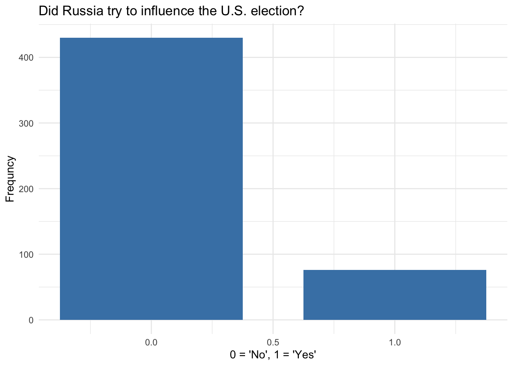
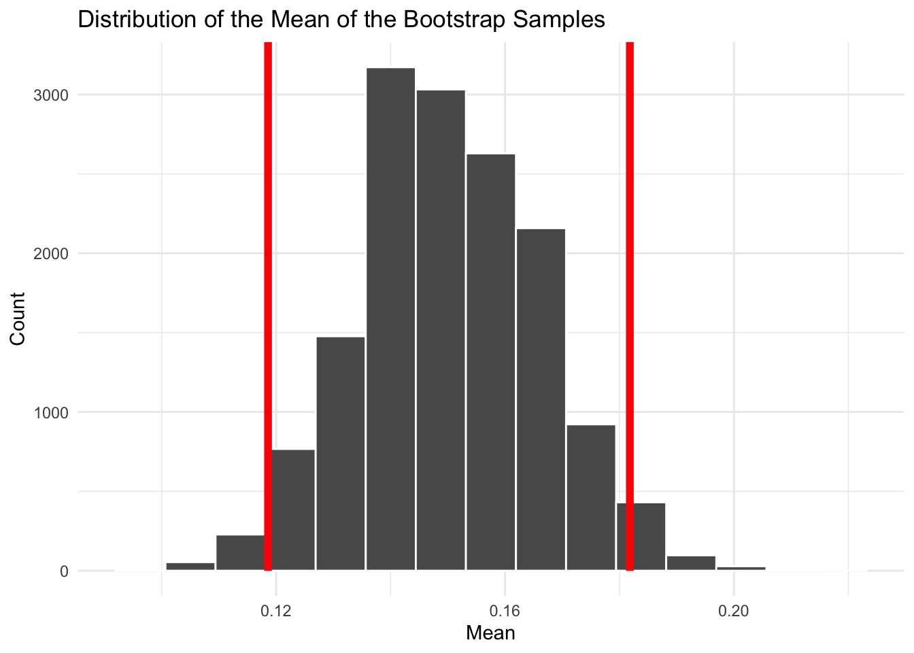

#install.packages("openintro")
library(openintro)
library(tidyverse)
glimpse(russian_influence_on_us_election_2016)Rows: 506
Columns: 1
$ influence_2016 <chr> "Did not try", "Did not try", "Did not try", "Don't kno…Sampling and Uncertainty
openintroinfertidymodelsIn this module, we will talk about the concepts of sampling and uncertainty. We will discuss the difference between a population and a sample, and how we can use a sample to make inferences about a population. We will also talk about the concept of uncertainty and how we can quantify it using confidence intervals. Finally, we will discuss the difference between parametric and nonparametric methods for calculating confidence intervals.
Sampling is the act of selecting a subset of individuals, items, or data points from a larger population to estimate characteristics or metrics of the entire population. It can be contrasted with a census, which involves gathering information on every individual in the population.
A parameter is a characteristic of a population whereas a statistic is a characteristic of a sample. So a sample statistic is used to estimate a population parameter.
Let’s imagine that we want to say something about the population of M&Ms and we take a sample of M&Ms from a bag. We calculate the proportion of blue M&Ms in our sample. This is our sample statistic. We can use this to estimate the proportion of blue M&Ms in the entire population of M&Ms.
Statistical inference refers to this process of making a guess about a population using information from a sample. We make an inference when the population parameter is unknown and we use a sample statistic to estimate it. This is the tricky part of statistics–we are trying to make a guess about something we don’t know. It is a challenging process that requires us to make some assumptions and to quantify our uncertainty in ways that we will talk about in a little bit.
Note that statistical inference is different from causal inference. Causal inference refers to when we are trying to determine if one thing is causally related another. There a lot of specialized methods for causal inference that we will not cover in this course. So even when we are talking about the relationship between two variables, we are just saying that there is a relationship, not that one causes the other.
Let’s imagine that we take many samples from the same population and through that process come up with many estimates of a parameter of interest like a mean or the proportion of M&Ms that are blue. Due to random chance, one estimate from one sample can differ from another. This is called sampling variability.
Sampling variability entails that the process of taking many samples from our population would produce a sampling distribution of our estimates. This distribution would have a mean and a standard deviation. The standard deviation of this distribution has a special name–it is called the standard error.
When we are making inferences, we want to both be able to generate an estimate and characterize our uncertainty with a range of possible estimates. We could do this by visualizing the sampling distribution of our estimates with a histogram or bar plot. But a more common way to do this is to calculate a confidence interval (CI).
The confidence interval is a range of values that we are confident contains the true population parameter. Confidence intervals are defined by confidence levels that represent the probability that the interval contains the true parameter. The most commonly used confidence interval is the 95% confidence interval. It says that we are 95% confident that the parameter value falls within the range given by that interval.
There are a couple of ways that we can derive our confidence intervals. One is to calculate it from the sample statistic and the standard error. This is called a parametric method because it relies on assumptions about the distribution of the data.
More specifically, the parametric method takes advantage of the Central Limit Theorem (CLT) to estimate the confidence interval. The CLT says that the sampling distribution of the sample mean will be approximately normally distributed if the sample size is large enough.
Here is the mathematical formula for deriving the CIs:
\[CI = \bar{x} \pm Z \left( \frac{\sigma}{\sqrt{n}} \right)\]
Here \(\bar{x}\) is the sample mean, \(Z\) is the Z-score corresponding to the desired level of confidence, \(\sigma\) is the population standard deviation, and \(n\) is the sample size.
This part here represents the standard error:
\[\left( \frac{\sigma}{\sqrt{n}} \right)\]
The first intuition you want to walk away with here is that the bigger the standard error is, the bigger the CIs are going to be. Another intuition is that the bigger the sample size (\(n\)) is, the smaller the CIs are going to be because the spread of the sampling distribution gets narrower as the denominator gets bigger.
Another way is to use a method called bootstrapping. It is a resampling method that involves taking many samples from the original sample and calculating the statistic of interest. The confidence interval is then calculated from the distribution of these statistics. This is a nonparametric method that uses the data to estimate the sampling distribution. It is referred to as a nonparametric method because it does not depend on assumptions about normality of the distribution of the data.
Here is the general process for bootstrapping:
Take a bootstrap sample - a random sample taken with replacement from the original sample, of the same size as the original sample;
Calculate the bootstrap statistic - a statistic such as mean, median, proportion, slope, etc. computed on the bootstrap samples;
Repeat steps (1) and (2) many times to create a bootstrap distribution - a distribution of bootstrap statistics;
Calculate the bounds of the XX% confidence interval as the middle XX% of the bootstrap distribution (usually 95 percent confidence interval)
Let’s look at an example to illustrate these concepts. In the openintro package, we can find a dataset that contains the results of a survey of 506 Russians about their beliefs about their country’s interference in the 2016 US presidential election. The survey asked whether Russia tried to influence the election, and 40% of the respondents said that they did.
First let’s call the openintro package and view the dataset…
#install.packages("openintro")
library(openintro)
library(tidyverse)
glimpse(russian_influence_on_us_election_2016)Rows: 506
Columns: 1
$ influence_2016 <chr> "Did not try", "Did not try", "Did not try", "Don't kno…Next, we will use mutate() to recode the qualitative variable as a numeric one…
Now let’s calculate the mean and standard deviation of the try_influence variable…
# A tibble: 1 × 2
mean sd
<dbl> <dbl>
1 0.150 0.358And finally let’s draw a bar plot…
ggplot(russiaData, aes(x = try_influence)) +
geom_bar(fill = "steelblue", width = .75) +
labs(
title = "Did Russia try to influence the U.S. election?",
x = "0 = 'No', 1 = 'Yes'",
y = "Frequncy"
) +
theme_minimal()
Now let’s run the bootstrap using the tidymodels package. In this chunk, we pipe the russiaData dataset into the specify() function to specify the variable of interest. Then we pipe the output into the generate() function to generate 15000 bootstrap samples. Finally, we pipe the output into the calculate() function to calculate the mean of each bootstrap sample. Then we save the output to a new data frame called boot_df and glimpse() the data frame.
Be sure to install tidymodels before running the code chunk.
library(tidymodels)
set.seed(66)
boot_dist <- russiaData |>
# specify the variable of interest
specify(response = try_influence) |>
# generate 15000 bootstrap samples
generate(reps = 15000, type = "bootstrap") |>
# calculate the mean of each bootstrap sample
calculate(stat = "mean")
glimpse(boot_dist)Rows: 15,000
Columns: 2
$ replicate <int> 1, 2, 3, 4, 5, 6, 7, 8, 9, 10, 11, 12, 13, 14, 15, 16, 17, 1…
$ stat <dbl> 0.1146245, 0.1442688, 0.1343874, 0.1877470, 0.1521739, 0.138…Calculate the confidence interval using the get_ci() function from the infer package which is part of the tidymodels suite. We will save the CI so that we can visualize it in the next step.
ci <- boot_dist |> get_ci(level = 0.95)
ci# A tibble: 1 × 2
lower_ci upper_ci
<dbl> <dbl>
1 0.119 0.182We interpret this confidence interval (CI) by stating that we are 95% confident that the proportion of Russians who believe that Russia interfered in the 2016 US election lies between the lower_bound and upper_bound. Or another way of putting it is that there is only a 5% chance that the true proportion lies outside of this interva.
Now let’s visualize the distribution and CIs using the visualize() and shade_ci() functions from the infer package.
boot_dist |>
visualize() +
shade_ci(ci, color = "red", fill = NULL) +
labs(
title = "Distribution of the Mean of the Bootstrap Samples",
x = "Mean",
y = "Count"
) +
theme_minimal() 
Since the visualize() function generates a ggplot object you can add layers to it like labels and a theme using the standard ggplot2 syntax.